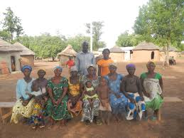
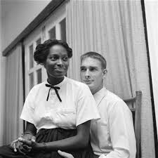
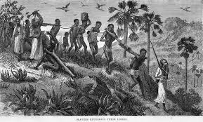

THE ROLE AND TREATMENT OF WOMEN IN THE FIRST TWO CHAPTERS OF HOME GOING
ROLE OF WOMEN
- Marriage - girls are brought up in preparation for marriage; suitors start showing up in their compounds as soon as they reach puberty. Bride price is considered in choosing the bride groom to be.
- When Effia turns twelve, suitors start streaming into their compound to ask for her hand in marriage while bringing in a lot of gifts for their family. She is finally married off to James Collins, who offers thirty pounds upfront and twenty five shillings a month as bride price.
- Esi has suitors flooding into their compound to ask for her hand in marriage as soon as she is fourteen years old. She, however, misses the chance to get married due to being enslaved.
- Women are to make themselves attractive for the men while the men's duty is to provide for the family.
- Procreation - women's sole purpose in marriage is procreation. They are therefore only married after their first blood comes out since it proves their ability to conceive.
- Baaba convinces Cobbe to let Effia get married to James Collins because she cannot give birth yet Chief Abeeku would need kids from her.
- Children prove men's masculinity, responsibility, wealth and power. In this way, men marry several wives in order to get many children.

- Silence - women are expected to remain silent when it comes to important discussions like those concerning political issues. Asking questions in such topics is also considered a crime for women.
- When Effia asks Chief Abeeku whether he will work for the British, her parents glare at her as a way of telling her to be quiet.
- Esi asks her mother, Maame, where the slaves who remain after people take their servants are taken. Maame simply tells her that that is 'boy's talk' and explains to her no further.
- Compassion and empathy - there are several instances of women helping fellow women to solve certain problems they suffer from.

- Adwoa tries to help Effia to conceive by getting her the roots to be kept under the bed and giving her the instructions of how to use those roots.
- Maame prefers to beat Abronoma, their servant, instead of letting the husband beat her. She cries as she does it since she does it unwillingly.
TREATMENT OF WOMEN
- Violence - women are beaten by both men and women for any slight mistakes they make.
- Baaba beats Effia for letting Fiifi fall while she held him yet she didn't let him fall intentionally. Fiifi was also not hurt at all; but she beat Effia and left her with scars.
- Cobbe beats Baaba for mistreating Effia. For any scar on Effia's body, Baaba has a corresponding scar from Cobbe's beating.
- Abronoma is beaten by Kwame Asare, Esi's father, for failing to do the chores assigned to her efficiently.
- Esi is smacked by Fiifi when she spits on him instead of complying to undress as they inspect the slaves.

- Withholding of important political and administrative information from the women.
- Chief Abeeku assembles only the men in the village to plan on how they will facilitate slave trade in order to acquire wealth for their village. Effia tries to ask what is going on but is ignored. Fiifi only tells her half of the ongoing after persuasion.
- Love.
- James Collins loves Effia, whom he has married, and treats her so well. He tries to learn more Fante words so that he can tell her how beautiful she is. 
- Kwame Asare loves Maame, Esi's mother so much that he saves her from slavery and makes her his wife. He treats her well during their marriage and lets her do things her own way instead of his at times.
- Slavery.
- Women are sold off as slaves and treated inhumanly. They are fed poorly, left to stay in unhygienic dungeons without even access to the bathrooms, raped by the soldiers and even their babies killed; like how Afua's baby is killed.
- Punishment for men's infidelity.
- Afua is sold as a slave to the British simply because she conceived out of wedlock yet the man involved receives no punishment. Her child is ultimately killed in the dungeons and she also commits suicide by suffocating herself soon after her child is taken from her.
- Baaba hates Effia probably because she was conceived as a result of Cobbe's infidelity yet it's not her fault.
- Rape.
- Maame is raped by Cobbe while she works for them as a servant thus she conceives and gives birth to Effia.
- Esi is raped by a soldier while she is a slave in the dungeons. This leaves her bleeding for days and increases the bitterness she has.
In conclusion, women in the book are generally treated as subjects of the men. They are tortured at any slight opportunity the men get. Other women also contribute to making other women suffer, either willingly or because of being forced by the men. In some instances, however, women have happy times and good people in their lives.
THE ROLE AND TREATMENT OF WOMEN IN THE WORLD TODAY
Due to the emerging trends in administration and religion, the role and treatment of women today is gradually changing to enable them to be treated as equals to men. Some differences are highlighted below, though they do not represent all the women in the world as the change is gradual and affects different regions at different times.

- Marriage is no longer viewed as a necessity for women. Their defined purpose is to excel in fulfilling whichever dreams they would like to achieve. For those who choose to get married, they help the men in providing for the family or even provide single-handedly.
- The main purpose of marriage is companionship and not procreation. Polygamy has also greatly reduced, since a man's power and wealth is no longer defined by the number of children he sires. Also, barren women are able to be happy in marriage since there is the option of adopting kids.
- Women currently take part in leadership, politics, management and all kinds of work. Their views are also considered and treated with respect. They also take part in the voting process, which is a great achievement in this aspect.
- Similar to in the book, women help each other compassionately even today. For instance, there are several women's organizations put in place to educate other women and also support them to do all they want to make ends meet.
- Violence against women is regarded as a criminal offence for which one can be arrested and even jailed in today's world. This is because there are several laws dictating the rights that women have.
- All information pertaining to anything is available to everybody; including the women. The information can be accessed online or even through news on TV and radio, newspaper and many other sources.
- Love between husbands and wives and also girls and their parents has tremendously grown; since there are no limitations in the society.
- There is no longer slavery; women have their rights that protect them against oppression of any kind. Also, human life is considered to be sacred; thus it is a crime for anyone to kill any woman's child.
- Rape cases are currently reduced; but in case it happens, the rapist meets the ugly consequences. The woman involved is also taken through some therapy sessions to help her heal emotionally and also physical health examinations to ensure that she is not infected. If she is infected, she undergoes treatment.
- Both men and women are equally punished in the case of infidelity since the world aims at making both men and women equal and letting everyone face the consequences of their mistakes individually.

In conclusion, women are in the quest to be equal to men. There are many feminist organizations fighting for the rights of women, and in as much as their goal has not yet been met, they have gone a long way in making women more recognized in the society than previously.